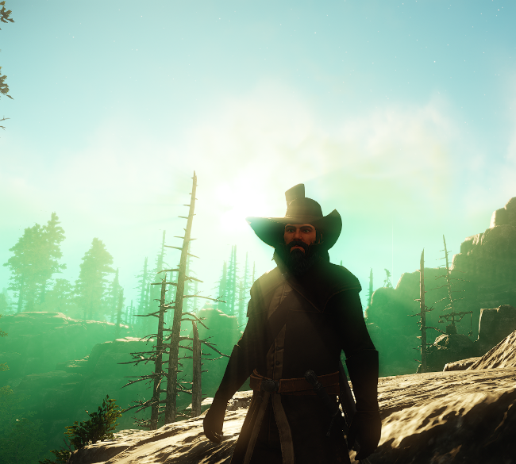
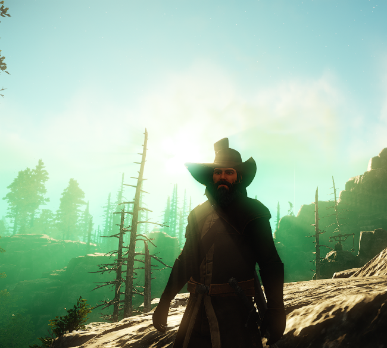
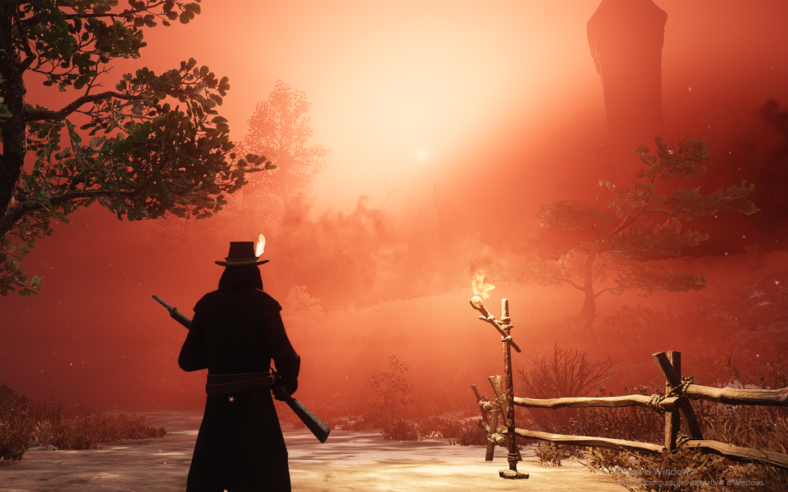
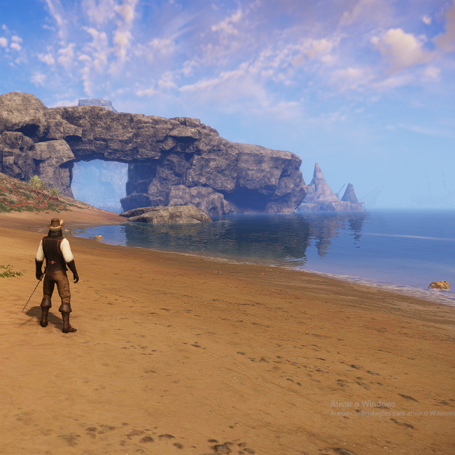
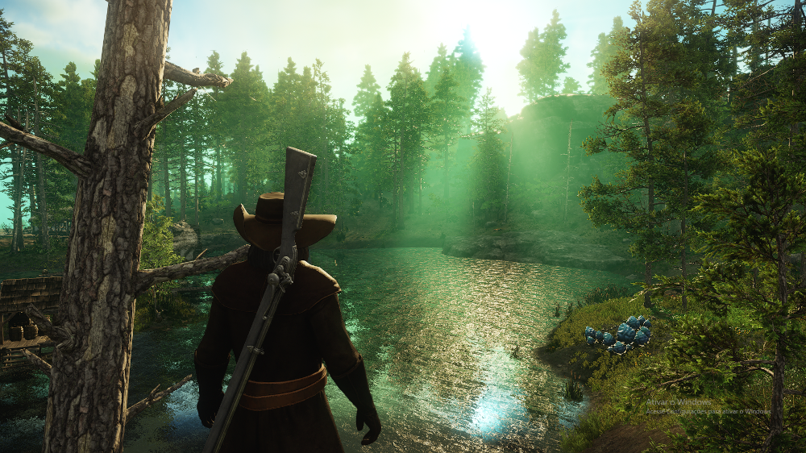

Me chamo Rousset Candel, sou um marceneiro por profissão e um caçador por paixão, e compartilharei aqui fotografias das espécies e paisagens de Aeternumm.
Como atualmente foram descobertas poucas espécies na ilha atualizarei constantemente quando encontrar novos especimes.
Futuramente também incluirei uma lista com várias receitas, desde sopas e guisados, a pratos altamente exóticos.
PS: Este site ainda está em construção, caso veja algo fora do normal ou incompleto peço desculpas, mas estou trabalhando para arrumar isso =).
**Da forma como as abelhas estão implatadas no jogo, não é perceptivel seu comportamento, sendo mostrado apenas as colmeias, por isso a colocarei em não-hostis até que novas informações venham á tona.
Este é meu quarto, vivo em um sobrado em Falésias do Monarca, uma região belíssima e relativamente calma.
 

Não há sensação melhor do que a de ver o sol nascer em Falésias.
Essa névoa com tons vermelhos é um sinal da corrupção, fique o mais longe possível.
Esta ponte de pedra natural pode ser encontrada ao norte de falésias do Monarca
Outro exemplo da beleza desta região